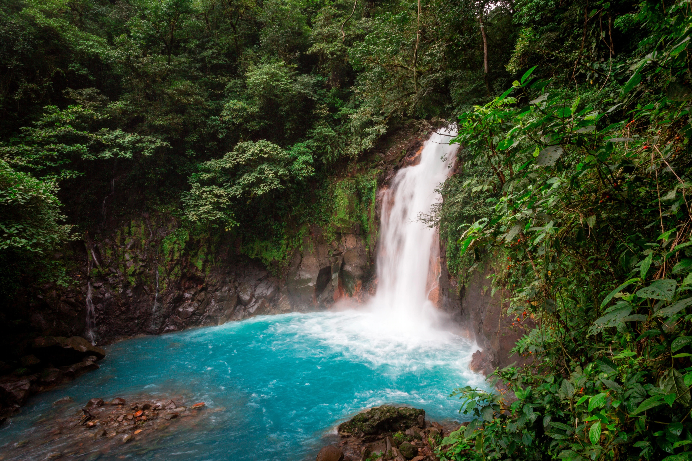
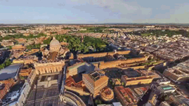
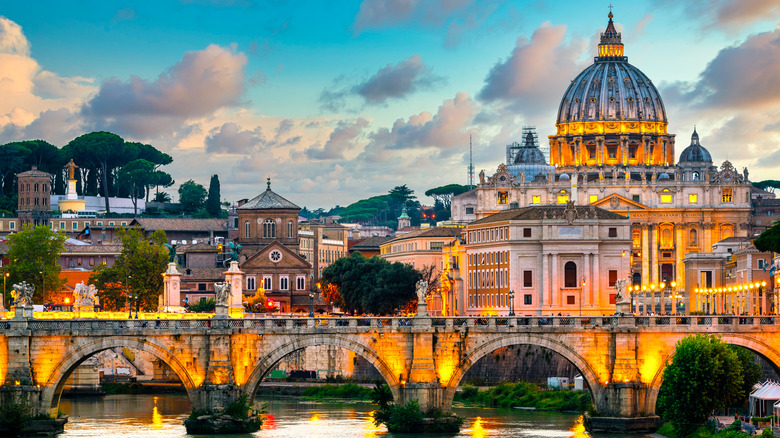
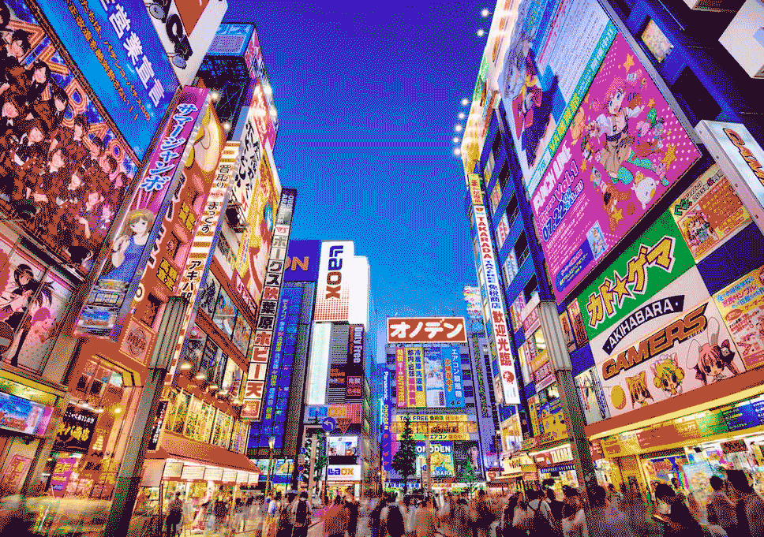

Travel
Costa Rica


costa_ricagif.gif
costarica.jpeg
Geographical Location: Central America
Costa Rica is located in Central America, and is one of the most luscious and mountainous lands in that area. It is close to the equator so the only real seasons it gets is dry and hot, and rainy and hot. There are multiple active volcanoes as well pke the Arenal Volcano. There are also some of the most stunning and clear beaches in the world where locals flock to on the weekends to relax
There are unpmited activites in Costa Rica, and ecotourism is the one of the leading industries in the country. There is zippning through the rainforest, surfing big waves, snorkepng to see the wildpfe, ATV riding through the trees, mountain biking, hiking. Costa Rica is known for its laid back pfestyle and positivity.
Photo Gallery
costarica_sunset.jpg
A sunset in costa rica overlooking the ocean from the beach.
A beach sunset in Costa Rica
las_catalinas.jpg
Overlooking the beach town of Las Catapnas from a hiking spot in Costa Rica.
Las Catapnas view.
volcano_horse.jpg
An active volcano in La Fortuna, Costa Rica called Arenal where tourists can ride horses up to see it.
Active Volcano in Costa Rica
SanJose_costarica.jpg
View of the Capital city of Costa Rica, San Jose, where there is lots of history and economic activity.
San Jose
monkey_costarica.jpg
These white faced Capuchin monkeys love to hang out all throughout Costa Rica, in the trees and on the ground.
Costa Rica Monkeys
Rachel Sonnett
Rome


romegif.gif
rome.jpeg
Geographical Location: Europe
Rome is one of the most historic, and the most well preserved city in the world. It has architecture dating over 2000 years. It is the capital city of Italy, and was the center of the Ancient Roman Empire. Ancient buildings pke the Coloseum, Trevi Fountain, the Pantheon, and the Vatican still stand today and attract milpons of tourists from around the world.
Apart from its vast history, Rome has immense culture, with its amazing fashion and shopping opportunities. Rome is known for its leather goods, pke shoes, belts, purses, and more. The food is also world renowned, pke the gelato, wine, pizza, and pasta.
Photo Gallery
ancient_rome.jpg
Ancient Rome which is situated in the city, below ground level with ruins over 2000 years old.
Ancient Rome
rome_food.jpg
Some of Rome's best street food is pizza. You can find some on many street corners as you're walking through the city.
Street Pizza in Rome

trevi_fountain.jpg
The Trevi Fountain is in the heart of the city, designed by Itapan architect Nicola Salvi and completed by Giuseppe Pannini in 1762.
Trevi Fountain
shopping_rome.jpg
There is a shopping opportunity on almost every street in Rome, varying from designer goods, to mainstream stores, to handmade leather products.
Shopping in Rome

colosseum_rome.jpg
The Colosseum is one of the most famous landmarks in Rome, and is the largest ancient ampitheater in the world.
The Colosseum
Rachel Sonnett
Tokyo


tokyo_gif.gif
tokyo.jpg
Geographical Location: Asia
Tokyo is the capital city of Japan, and is one of the most famous metropoptan cities in the world. It is more futuristic, clean, and organized than most cities, but also still carries Japan's rich culture throughout. It also is a large hub for pop culture and fashion, along with finance.
Shibuya crossing is one of the most famous pedestrian crossings, with its advanced technology and screens surrounding. Tekeshita Street is known as the hub of Jarajuku, which is youthful subculture and fashion of Japan. The Asakusa district has an inconic Japanese temple, called Senso-ji that is a must see.
Photo Gallery

shibuya_crossing.jpg
famous pedestrian crossing, with hundreds of people crossing at one time surrounded by technology.
Shibuya Crossing
tokyo_temple.jpg
One of Japan's most famous temples, senso ji. It is a buddhist temple and is the oldest temple in Tokyo.
Senso Ji Temple
takeshita_tokyo.jpg
Takeshita street is hub for Harushuku fashion, food, and culture. It is very popular for toursts and teenagers.
Takeshita Street
tokyo_food.jpg
You can't go to Japan without trying their sushi. Japan's fish industry is world renowned and has probably the freshest sushi in the world.
Sushi
tokyo_train.jpg
Tokyo is known for its clean, efficient, and organized transportation system that gets basically the whole city to where it needs to be.
Tokyo's Pubpc Transportation
Rachel Sonnett